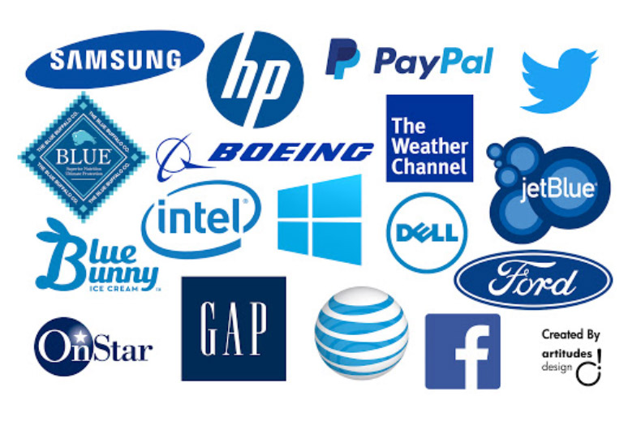

Що було використано:
Монохроматична колірна схема, що складається з різних тонів, відтінків і насиченості одного основного кольору. Вони дуже згуртовані, але ризикують стати одноманітними.
Значення кольорів:
Синій - довіра, спокій, безпека, впевненість, відповідальність, надійність, авторитет, комфорт, розслаблення. Синій колір може зміцнити лояльність клієнтів і дати їм відчуття, що вони можуть задуматися і не поспішати під час покупок. Викликає відчуття безпеки та довіри до бренду. У дітей асоціюється з дорослішанням
Фіолетовий - креативність, багатство, витонченість, вишуканість, таємничість, духовність, розкіш, натхненність. Історично асоціюється з досконалістю, багатством, престижем. Темні відтінки фіолетового заспокоюють, а світлі - відображають відчуття весни та романтики. Популярний серед креативних та оригінальних брендів, сервісів
Приклади використання:
Завдяки культу Діви Марії синій стає символом жіночності й чистоти. А завдяки королю Філіппу Августу став модним у державній символіці. Він почав носити синє вбрання замість червоного і змінив прапор Франції. Так синій поступово став кольором політичного мейнстріму. Зараз він об’єднує весь світ: прапор Євросоюзу, Ліга Націй, ЮНЕСКО, ООН, НАТО. Також він став символом рівних прав завдяки джинсам, які стали “уніформою”. Джинси — це перший одяг, який однаково вільно носили чоловіки та жінки.
Синій використано в брендингу гігантської кількості IT-компаній: Microsoft, Intel, Facebook, Linkedin. Також синій обирають PayPal, Ford, Nivea, Dove
Чому їх обирають:
Бренди переважно віддають перевагу монохромним рішенням: понад 90% великих компаній обмежуються одним або двома кольорами. Синій — найпопулярніший колір, наявний у брендингу 33% компаній.
Тілбурзський університет (Нідерланди) заявив, що картини, на яких переважають сині тони, йдуть з аукціонів на 11% дорожче за інші картини. Отже, синій є найбільш продаваним кольором.
Дослідження Джо Хеллока про гендерні та колірні переваги виявило, що багато вікових груп віддають перевагу фіолетовому